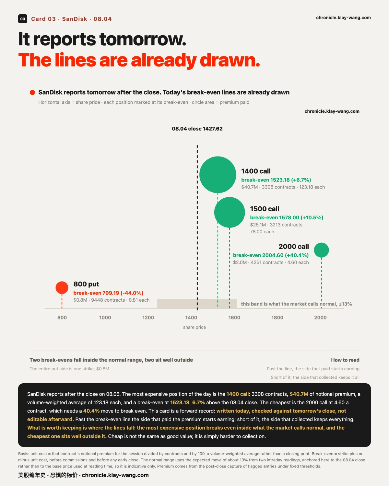
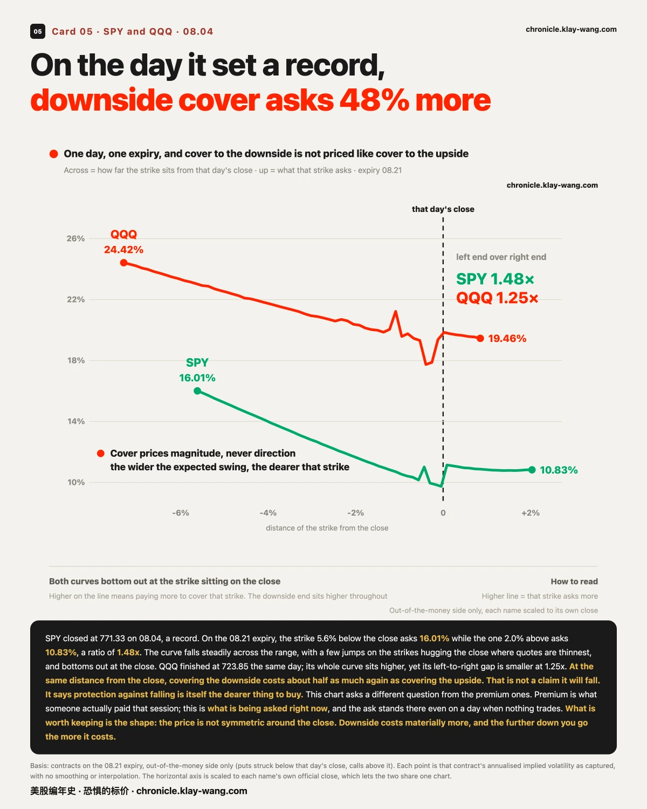

闪迪明天开奖，回本线今天就画好了· 08-04 · 8.3-8.7
08.04 三家公司交财报，市场为它们各自开的价钱摆在一起，等于把它有多确定这件事明码标价了。
- 1.09 亿美元押在 AMD 08.05 到期、行权价 500 以上的看涨合约上。它财报后夜盘在 473.51。这笔钱 08.05 全部结算，完整地从一边转到另一边
- 闪迪 08.05 才交卷，钱 08.04 已经到位：看涨侧是看跌侧的 88.5 倍，最贵那一注的回本线画在 1523.18（+6.7%）。这条线 08.04 钉住，08.05 收盘我们回来对
- SpaceX 两边一样重（1.45 倍，张数上看跌侧还多 1289 张），而且它的钱从收盘价下方 48% 一路铺到上方 163%，AMD 只铺了 58 个百分点。它是唯一一家没交过财报的
这三行连起来是一句话：交过财报的公司，钱压一边；没交过的，钱压两边，而且铺得到处都是。这不是谁在猜涨跌，是市场在为自己有多确定标价。
〖跳读〗① 08.05 作废的 1.09 亿 ② 闪迪的回本线 ③ 钱的分布差 61 倍 ④ 往下的保险贵 48% ⑤ 同一天保险差 10.2 倍

1.09 亿美元押在一个 08.05 就作废的价位上
一句话：这笔钱不是观点，是成本，而它 08.05 就要结算。
先说为什么盯权利金而不盯涨跌幅。涨跌幅是已经发生的结果，谁都能复述，说错也不用付代价。权利金不一样：有人在一个具体的行权价、一个具体的到期日上，付了实打实的钱。这笔钱只在特定情景下才有回报，所以它是一个被标了价的、可以证伪的命题。
08.04 收盘的落库数据里，AMD 08.05 到期（也就是 08.05）、行权价在 500 以上的看涨合约，一共 17 档、98337 张、权利金合计 1.09 亿美元。同一到期日的看跌侧是 7 档、32935 张、2382 万，只有看涨侧的四分之一多一点。
AMD 的财报在收盘后出来。夜盘最新价 473.51。
如果 08.05 收在 473 附近，这 1.09 亿会完整地从一边转到另一边。
这句话要写得很小心，因为它是本刊的红线所在。我们不知道这些钱是谁付的、押的哪一边。 买入看涨押上行、卖出看涨收权利金，这两件完全相反的事，在成交记录里长得一模一样。我们没有资金流数据，看不见买卖双方是谁。
能说的只有：围绕 AMD 08.05 收在 500 以上这个命题，市场成交了 1.09 亿美元的权利金。 谁赢谁输，08.05 收盘自己会给答案，这是一笔零和的钱。
顺带把 08.03 的账结了。08.03 我们记过：两周内到期的异常成交里，AMD 与 SpaceX 两家吃掉全场权利金的 60.6%，各 22 笔、合计 1.47 亿，当时写的是 08.04 收盘后交卷、08.05 回来对账。
AMD。财报前最后一个价 518.58。08.05 那一档，盘中两次读数给的预期波动区间都在 ±7% 附近。夜盘 473.51，实际走了 8.69%。比开的价多出约两成，尺子不够长。
SpaceX。财报前最后一个价 125.33。08.07 那一档，两次读数都在 ±14.4% 附近，是 AMD 的两倍。夜盘 115.60，实际走了 7.76%，约为开价的一半。
三条边界不写清楚这个对账就是假的。第一，两档管的时间不一样长，AMD 一天、SpaceX 三天，贵一倍里有一部分只是时间更长；SpaceX 上市才 27 天，链上没有更近的到期，这是数据的限制不是我们挑的。第二，SpaceX 的窗口 08.07 才关，现在是中途读数不是结论；事件类采样中途任何一点都不能当答案，我们在一次 FOMC 上吃过一模一样的亏。第三，夜盘成交比正式时段薄得多。

闪迪 08.05 开奖，回本线 08.04 就画好了
一句话：这一节是前向记录，08.04 写下，08.05 回来对，不能事后改。
全场最贵的一注在闪迪身上，而它 08.05 盘后才交卷。
08.07 到期那一档，看涨侧三个行权价，权利金合计 6776 万美元。看跌侧全场只有一档，77 万。看涨侧是看跌侧的 88 倍。
把这三档摊开，每一档的回本线都能算出来。单张成本是当日全部权利金除以全部张数，也就是成交均价，不是收盘那一刻的价：
| 行权价 | 张数 | 权利金 | 单张成本 | 回本线 | 距 08.04 收盘 1427.62 |
|---|---|---|---|---|---|
| 1400 看涨 | 3308 | 4075 万 | 123.18 | 1523.18 | +6.7% |
| 1500 看涨 | 3213 | 2506 万 | 78.00 | 1578.00 | +10.5% |
| 2000 看涨 | 4251 | 196 万 | 4.60 | 2004.60 | +40.4% |
| 800 看跌 | 9448 | 77 万 | 0.81 | 799.19 | −44.0% |
回本线的意思：股价越过这条线，付出权利金的那一方才开始赚；没越过，收钱的那一方全部拿走。两边都写在这里，我们不预设是哪一边。
有意思的是那档 2000 看涨。单张只要 4.6 块，但要闪迪三天内涨 40.4% 才回本。4251 张，196 万美元。这是全场最便宜、也最难兑现的一注。
而市场给闪迪这一档开的预期波动区间是 ±13% 附近。也就是说，1400 那档的回本线（+6.7%）落在市场认为正常的范围之内，1500 那档（+10.5%）也在里面，2000 那档（+40.4%）远在外面。
这三条线 08.04 钉在这里。08.05 收盘我们回来看，哪几条被越过了。

同样是财报，钱的分布差 61 倍
一句话：市场为有历史可循的公司和毫无历史的公司，定价方式完全不同。
把三家财报票放在一起，只看一个数：看涨侧权利金除以看跌侧权利金。全部取 08.04 收盘口径。
| 看涨侧 | 看跌侧 | 倍数 | 交过几次财报 | |
|---|---|---|---|---|
| 闪迪 | 6776 万 | 77 万 | 88.5 倍 | 多次 |
| AMD | 1.61 亿 | 3427 万 | 4.7 倍 | 多次 |
| SpaceX | 1.84 亿 | 1.27 亿 | 1.45 倍 | 一次都没有 |
最极端的和最平均的差 61 倍。
口径说明：这张表取当日全部异常成交，不限到期日。节目一那 1.09 亿只算 08.05 一个到期，是同一只票的两种切法，两个数都对，别混着看。
SpaceX 还有一个细节：张数上看跌侧比看涨侧还多，389027 张对 387738 张，相差不到千分之四。钱是看涨侧多，张数是看跌侧多，说明看跌侧买的是更便宜、更远的合约。上下两个方向都压了重金，而且量级相当。
还有一个更能说明问题的数：这些钱铺开的价格范围。SpaceX 的异常成交落在 61 个行权价上，最低那一档在收盘价下方 48.1%，最高那一档在上方 163.3%，跨度 211 个百分点。AMD 是 33 档，从下方 22.9% 到上方 35.0%，跨度 58 个百分点。SpaceX 的钱铺得比 AMD 宽 3.6 倍，而它的权利金总额 3.10 亿也比 AMD 的 1.95 亿多出 59%，是08.04 全场最大的一只。
最极端那一档是 330 看涨，98953 张、全场张数第一，单张只要 0.24 美元，押它三天之内涨 1.6 倍。
它是三家里唯一一家上市之后第一次交财报的。市场手上没有任何可参照的历史，于是钱不但压在两边，还铺得到处都是。市场对 AMD 至少还有一个共识区间，对 SpaceX 连区间都还没有。
再说一次那条线：这些数字推不出方向。 看涨侧钱多，可能是有人买入看涨，也可能是有人卖出看涨收权利金，成交记录里分不出来。所以这一节记的不是谁看多谁看空，而是分布的形状：钱压一边，还是两边一样重。
这个形状本身是有信息的，而且它有价格。 市场愿意为闪迪的一个方向付 88.5 倍于另一个方向的钱，为 SpaceX 的两个方向付几乎一样的钱。这不是谁在猜涨跌，这是市场在为自己有多确定标价。
这条判断可以被推翻，条件写在这里。SpaceX 下一次财报如果两侧仍然接近 1 比 1，那说明这跟第一次交卷无关，是这只票本身的形状，本条收回。如果闪迪 08.05 开完奖、下一次财报的两侧倍数掉到个位数，那么 88.5 倍只是这一次的特例，同样收回。

创了历史新高这天，往下的保险贵 48%
一句话：价钱不是围着现价对称的，往下比往上贵一大截。
前面三节讲的都是权利金，也就是当日有人实际付了多少钱。这一节换一把尺子：保险要价。它说的是此刻开价多少，就算一整天没人成交，这个价也挂在那里。两者问的不是同一件事。
08.04 SPY 收 771.33，08.04 当日涨 1.80%，盘中最高 773.41，创下历史新高。同一天，08.21 到期那一档里：
- 行权价在收盘下方 5.6% 的合约，保险要价 16.01%
- 行权价在收盘上方 2.0% 的合约，只要 10.83%
- 前者是后者的 1.48 倍
通俗的说：同样是离收盘价 5%，想防住往下那一段，要比防住往上那一段多付将近一半的钱。
这里必须说清楚一件事：这不是说它会跌。 我们不做方向判断，这条线也推不出方向。它说的是另一件事，防跌这件事本身更贵，而且越往下越贵。什么叫贵？贵的意思是市场认为价格会晃得更大，所以要防住那一档，得付更多的钱。
QQQ 同日收 723.85，整条曲线都比 SPY 高一大截，但它的左右落差反而更小，只有 1.25 倍。一个整体更贵，一个两头差得更开。
这里有个能对上的细节：QQQ 08.04 当日涨 3.40%，是 SPY 的近两倍，但它距自己 748.65 的高点还差 3.31%，而 SPY 刚创下新高。离自己的高点更远的那一个，保险整条都更贵。 这条线索到下一节会被扩到全部十七只票上。
再补一个可测的点：两条曲线的最低点都落在当日收盘价那一档上，SPY 在收盘下方 0.04%，QQQ 在下方 0.39%。曲线整体一路下行，只在贴着收盘价的那几档跳了一下，那几档本来报价就稀、跳得凶。
这条判断可以被推翻。如果接下来几个交易日 SPY 的左右落差收敛到 1.2 倍以内，那么 1.48 倍只是创新高那一天的特例，本条收回。

同一天买 30 天保险，最贵的贵 10.2 倍
一句话：市场为有历史可循的公司和毫无历史的公司，定价方式完全不同。
把保险要价这把尺子从两只宽基扩到全部十七只：价钱从 13.06% 一路排到 132.57%，最贵的是最便宜的 10.2 倍。
所以就是市场认为 SPY 一个月内上下 3.8% 算正常，闪迪是 38.3%。 这才是那 10.2 倍的实际含义，不是一个抽象的百分数。
大体上，一只票离自己的 52 周高点越远，它的保险越贵。上一节 SPY 与 QQQ 的对照就是这条线索的两点版本。但例外才是信息。
AMD 和苹果距各自高点几乎一样远，−13.59% 对 −12.01%，差不到 1.6 个百分点。而 AMD 的保险要价 79.13%，苹果只要 27.26%，贵 2.9 倍。
差的那部分不是走势给的，是日历给的：AMD 08.04 盘后就要交卷。财报日期是公开日历上的事实，不是我们的推断。图上三个红点，就是08.04 或 08.05 交卷的那三只，它们全都明显高于同样距高位置上的其他票。
还有一个反过来的例子：特斯拉距自己高点 −35.11%，比美光的 −31.31% 还远，保险却只要 45.12%，不到美光 91.36% 的一半。 它是十七只里唯一一只保险要价分位低于 50 的票。离高点远不等于保险一定贵，这条规律有例外，我们把例外也画在同一张图上。
十七只里保险最便宜的那一只，正是08.04 创下历史新高的 SPY，13.06%，分位只有 20.3。跌得最少的那只，防它也最便宜。
这条判断可以被推翻。如果 AMD 财报开完奖之后，它的保险要价没有掉回和苹果同一档，那说明贵的那部分不全是财报给的，本条收回。

温度计
恐惧的标价是 68 分位，偏贵。三个窗口分别是 68、44、52。
这个读数说的是，现在去买一份一年期的保险，价钱落在过去五年里偏贵的那一档，但还没到贵得离谱。近端九天的要价除以三个月的要价是 0.778，落在第 33.8 百分位，意思是市场认为眼前这几天比未来三个月更平静。
这不是给买保险的人看的，是给卖保险的人开的价。
本站不提供投资建议，不预测方向，不做择时。